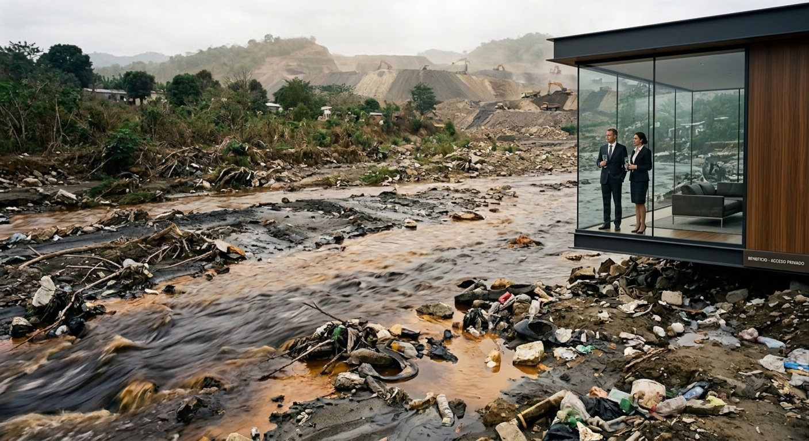

La necesidad fabricada
Del consumo que se multiplica a la extracción de recursos naturales
Resumen
Este ensayo cuestiona un modelo de producción que convierte el consumo en una fuente permanente de nuevas necesidades y presiona la extracción de recursos naturales. A través de la minería, el oro y las desigualdades que deja la contaminación, plantea una pregunta central: qué entendemos por progreso, quién recibe sus beneficios y quién asume sus costos. El texto no propone renunciar a los avances ni rechazar toda minería, sino distinguir las necesidades esenciales del consumo superfluo y defender condiciones de vida dignas.
Palabras clave: consumo, minería, recursos naturales, desigualdad, medioambiente, progreso.
Del progreso a la necesidad de consumir
El llamado progreso del ser humano ha dependido, y mucho, de lo que puede arrancarse a la naturaleza. Esa dependencia ha cambiado de rostro según la época: primero fueron las piedras, luego la madera, hasta que, a través del fuego, se aprendió a domar minerales más pesados y difíciles de extraer y de moldear. Aquello transformó la forma de producir y de repartir la riqueza, acercó a las sociedades entre sí e hizo, al menos en apariencia, más llevadero el trabajo. Conviene decirlo con cautela, porque ese avance no llegó por igual a todos los rincones de la tierra. De ahí que valga la pena detenerse en un cambio concreto: el paso de producir para la necesidad a producir para el consumo, con sus consecuencias sobre la naturaleza y sobre la mirada de quienes transitan ese camino a ciegas, en plena época de la posverdad.
Antes de adentrarse en ello, es útil retroceder miles de años, o quizás millones. Cabe imaginar a un individuo que vive en una cueva, probablemente con un grupo de una docena de personas. Su tiempo se reparte entre cazar para alimentarse y recoger frutos y raíces. No tiene grandes necesidades: comer y, tal vez, disfrutar del cuerpo. Sus días giran en ese ritmo: cazando, recogiendo y teniendo sexo. Es posible que talle herramientas con piedras o palos y que se cubra con cueros de animales solo cuando aprieta el frío. No se sabe con exactitud si era un ser de preguntas profundas, pero en algún momento pudo sentir la necesidad de decir «aquí estoy». Ese «aquí estoy», al que se volverá más adelante, podría ser el mismo impulso que hoy lleva a invertir fortunas en buscar vida en otros planetas mientras se ignoran las vidas que laten en este.
Hoy la humanidad vive de una forma complicada, y esa vida se sostiene sobre el consumo. Existen herramientas como la filosofía, pero faltan argumentos, o quizás ganas, para bajar el ritmo de esta velocidad. Casi todos los inventos están pensados para hacer las cosas más rápido, porque no hay tiempo o porque se quiere ahorrarlo, y casi nadie sabe para qué. Ese tiempo ganado se llena enseguida de nuevas obligaciones, nuevas formas de consumo y nuevas necesidades que aparecen casi al mismo ritmo en que se satisfacen las anteriores. Se vive tan rápido que el cuerpo termina silenciado, y ese estrés agudiza enfermedades que, con el tiempo, acaban con la vida.
Minería, consumo y desigualdad
¿Por qué se llega a sacrificar y contaminar el ambiente propio para fabricar cosas que supuestamente mejoran la vida, hasta quedar atrapados en ese bucle? Los demás animales solo se mueven para buscar lo que necesitan para subsistir. El ser humano pierde esa subsistencia a fuerza de crear cosas. Tampoco basta ese argumento para explicar lo complicado del sistema, porque pesan además la carencia, o el aprovechamiento, frente a los líderes que se escogen y que muchas veces empujan hacia este rumbo. Se partió de un simple trabajar para alimentarse y se llegó a comer hasta enfermar por exceso, mientras millones de personas no tienen qué comer. Los recursos que hacen la vida más fácil (y esto, entre comillas) provienen con frecuencia de territorios cuyos habitantes no gozan de lo que podría llamarse una vida digna.
¿Y qué tiene que ver todo esto con la minería? La minería proporciona muchos de los elementos con los que se construye lo necesario para vivir mejor. El cobre recorre cables, componentes electrónicos y redes de energía; el aluminio sostiene la construcción, el transporte y hasta los aviones; el níquel está en el acero inoxidable y en ciertas baterías; el zinc protege al acero de la corrosión; el plomo vive en las baterías y el estaño en las soldaduras de lo electrónico. Negar esa utilidad sería absurdo, y más aún en tiempos de transición energética, cuando la demanda de algunos de estos metales crece por razones legítimas. Pero reconocerla no equivale a aceptar cualquier nivel de extracción, ni a suponer que toda la demanda responde a necesidades esenciales. Lo que se cuestiona no es la minería en sí, sino la parte que alimenta la acumulación y el consumo superfluo.
El oro es el ejemplo más claro. En 2025 la demanda mundial rondó las 5.000 toneladas, y solo 322,8 se destinaron a usos tecnológicos. A inversión fueron 2.175,3; a compras de bancos centrales y otras instituciones, 863,3; y a joyería, 1.638. No se trata de despreciar el valor cultural, estético o económico del oro, ni la función de reserva que cumple en las finanzas. Se trata de preguntarse si lo que se saca de la tierra responde a lo que la humanidad necesita o a un sistema que convierte los recursos en instrumentos de acumulación. Podría pensarse incluso que, si se utilizara únicamente el oro ya extraído y se destinara solo a lo que de verdad hace falta, la tierra podría pasar siglos, quizás trescientos años, sin ser tocada en busca del preciado metal, y sin ser contaminada en zonas donde la minería ni siquiera debería considerarse una opción. El discurso del progreso y del crecimiento económico se vende muy bien, pero basta mirar lo que puede palparse: los grandes millonarios no son los pueblos que cargan con los desperdicios de la minería. Quienes se enriquecen muchas veces ni conocen esos lugares; especulan con recursos cada vez más demandados para fabricar cosas que ya no tienen que ver con la subsistencia, sino con acumular y apostar.
¿Qué significa vivir con dignidad?
La contradicción no vive solo en la minería. Vive en la vivienda: es probable que en muchos países existan más casas vacías que personas sin techo, y aun así una enorme cantidad de gente no tiene dónde dormir. Vive en la salud, en la educación, en casi todo. La humanidad, a costa de explotar y contaminar la naturaleza, ha construido un sistema donde casi todo resulta fácil comparado con la vida en las cuevas, y a la vez les niega esas facilidades a sus semejantes, porque a esas cosas se les dio un valor que no todos pueden pagar. Y los grupos a quienes se les niega ese privilegio son, precisamente, los que más sufren la forma indiscriminada en que se tratan los recursos naturales.
Quizás aquel hombre de hace miles de años solo quiso decir que estuvo aquí. Quiso dejar su huella, esa necesidad de permanecer que tienen los humanos cuando un ciclo se acaba. Pero su «aquí estoy» no desembocó en preguntas más grandes, como qué somos. Y hoy se vive de nuevo en una sociedad que ha dejado de preguntarse. No es una crítica a los modos de vida, sino a los modelos de producción. La pregunta debería ser para qué acumular tanto cuando la vida es finita, y por qué hay que acumular a costa de quienes hacen posible esa acumulación. Debería venir acompañada de otra: ¿para qué cambiar el carro o el celular todos los años, cuando casi nada en ellos cambia a esa velocidad? Y vuelve entonces la gran pregunta: ¿por qué dejar que el estrés llegue hasta cierto punto para renovar cosas que no hace falta renovar, y que muchas veces ni siquiera se necesitan?
Es triste ver cómo gran parte de la humanidad dejó de tener necesidades y pasó a tener intereses. Las necesidades fueron jaqueadas por el sistema para vender ilusiones, y esas ilusiones tienen un costo de vida terrible. Pero el mundo no se detiene, porque hay que ser uno más de la manada, y los humanos, al final, siguen siendo una tribu. Que nadie se confunda: la minería y la explotación de los recursos naturales, tal como se practican hoy, sirven en buena medida para sostener un modelo de producción que terminará sucumbiendo, porque se vive en un planeta de recursos finitos pretendiendo vivir sin límites. No se trata de renunciar a los avances ni de volver a las cavernas, sino de preguntarse qué clase de progreso se está construyendo, para quién y a costa de qué. Quizás el verdadero progreso no sea tener cada vez más cosas, sino llegar a un punto en que no haga falta destruir tanto para vivir con dignidad.
Lee o descarga el documento original en PDF.
Descargar PDF